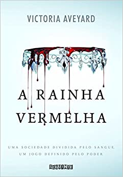
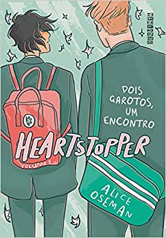

-
É assim que acaba

É assim que acaba é o romance mais pessoal da carreira de Colleen Hoover, discutindo temas como violência doméstica e abuso psicológico de forma sensível e direta.
R$32,00
-
A hipótese do amor

Quando um namoro de mentira entre cientistas encontra a irresistível força da atração, todas as teorias cuidadosamente calculadas sobre o amor são postas à prova.
R$33,90
-
Amor e gelato

Depois da morte da mãe, Lina fica com a missão de realizar um último pedido: ir até a Itália para conhecer o pai. Do dia para a noite, ela se vê na famosa paisagem da Toscana, morando em uma casa localizada no mesmo terreno de um cemitério memorial de soldados americanos da Segunda Guerra Mundial, com um homem que nunca tinha ouvido falar.
R$39,75
-
Rainha vermelha
O mundo de Mare Barrow é dividido pelo sangue: vermelho ou prateado. Mare e sua família são vermelhos: plebeus, humildes, destinados a servir uma elite prateada cujos poderes sobrenaturais os tornam quase deuses.
R$32,99
-
A princesa das cinzas
Theodosia era a herdeira do trono de Astrea quando seu reino foi invadido, deixando um rastro de destruição. Dez anos depois, a princesa, órfã, prisioneira e subjugada, percebe que não lhe resta mais nada, a não ser lutar pela própria liberdade. O passado, que por tanto tempo ficou enterrado, agora precisa vir à tona para mostrar a Theodosia os caminhos que poderão levá-la de volta ao trono.
R$42,00
-
Sombra e ossos
Em um país dividido pela Dobra das Sombras – uma faixa de terra povoada por monstros sombrios – e no qual a corte real está repleta de pessoas com poderes mágicos, Alina Starkov pode se considerar uma garota comum. Seus dias consistem em trabalhar como cartógrafa no Exército e em tentar esconder de seu melhor amigo, Maly, o que sente por ele.
R$29,00
-
Vermelho branco e sangue azul

Bonito, carismático e com personalidade forte, Alex tem tudo para seguir os passos de seus pais e conquistar uma carreira na política, como tanto deseja. Mas quando sua família é convidada para o casamento real do príncipe britânico Philip, tudo isso muda.
R$29,90
-
Me chame pelo seu nome
Filho de um importante professor universitário, o jovem está bastante acostumado à rotina de, a cada verão, hospedar por seis semanas na villa da família um novo escritor onde conhece um estudante de 24 anos e acaba mudando as coisas para todos.
R$40,00
-
HeartStopper
Charlie Spring e Nick Nelson não têm quase nada em comum. Charlie é um aluno dedicado e bastante inseguro por conta do bullying que sofre no colégio desde que se assumiu gay. Já Nick é superpopular, especialmente querido por ser um ótimo jogador de rúgbi.
R40,00
Romance
Fantasia
LGBTQ+
| Livro | Quantia em estoque |
|---|---|
| É assim que acaba | 59 |
| A hipótese do amor | 32 |
| Amor e gelato | 62 |
| Rainha vermelha | 15 |
| A princesa das cinzas | 18 |
| Sombra e ossos | 26 |
| Vermelho branco e sangue azul | 07 |
| Me chame pelo seu nome | 40 |
| HeartStopper | 12 |